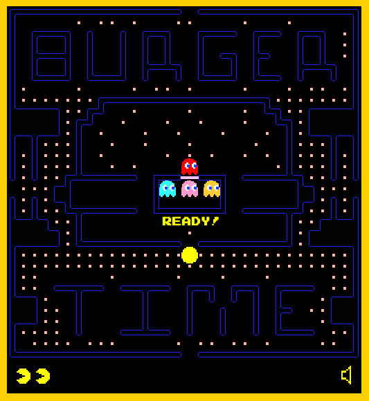
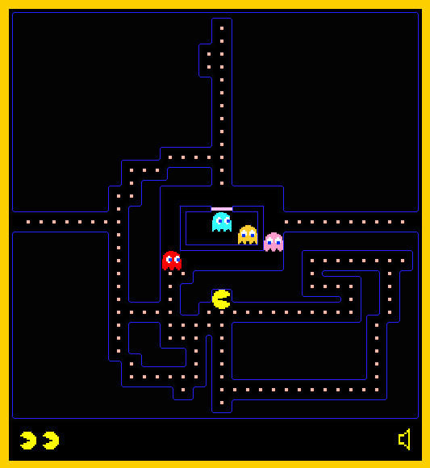
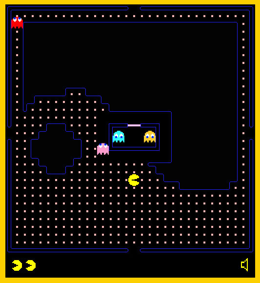
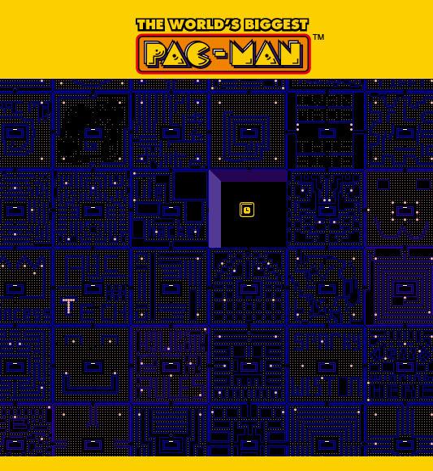

Wed, 13 Apr 2011 11:53:50 · Games · Pac-Man · GamesDesign
join the worlds biggest pac man game creates




Join the World’s Biggest Pac-Man game. Creates your own level and challenge your mates to beat the ghost and survive the maze.